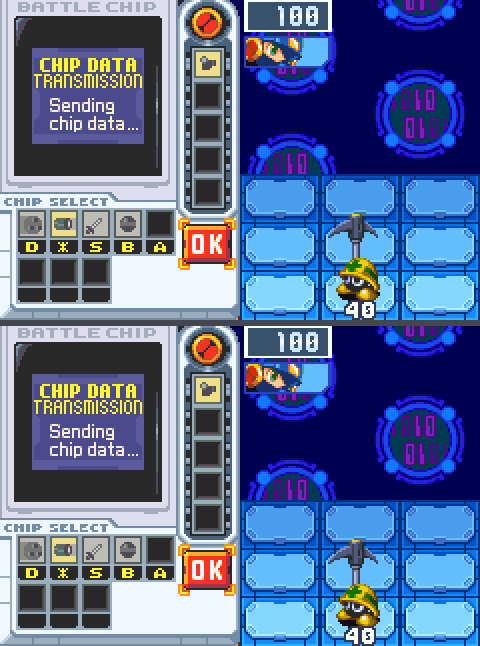
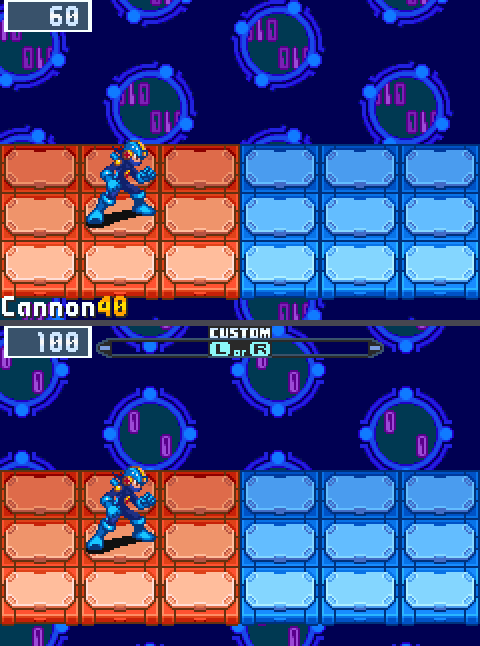
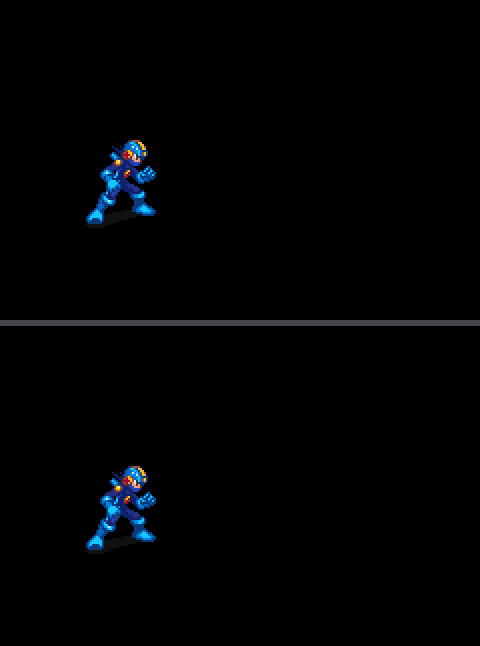

What the agents landed in the last 24 hours, taken from the tickets' own results. Every number here is measured by the harness against a recording of the original game.
Done
Each paragraph is a model's plain-language rewrite of the ticket's own result, checked so that every number in it comes from that result; the results themselves are in the repository's TODO_ARCHIVE.md.
T7p, T7p. T7p was a no-op: HEAD rng_cadence 9/540, already below 10/540 acceptance threshold [T7o's PARTIAL landing 784c
F21e, F21e. F21e was a no-op: HEAD result isolated already 0/0/40 PASS [neg 111839, not blind] via F34b's intro_fade=0/sta
T13b, T13b. src/battle.rs: hit_in now armed only when the strike's take_damage[] landed
T9d, Why the poked Gunner battle never goes live: write-watch the sequencer on the working scenario and name the difference. no writer for dword_203CA70 on either battlestart route (200f watch-write, both empty); Index_01 parks 0x08 at sub_8009338's beq (asm00_1.s:13065-13067) because eS20364C0.JumpOffset00 parks at 4; sequencer moves only on hand-played PAUSED root (0x1C->8, f11, PC 0x080083F8). mettaur's live canon is PAUSED not battlestart (harness.py:958), so no row premise broken.
T10, Inventory of the battle engine from the ROM's own tables: the completion checklist gets its counts. LANDED as d0e0574 (two passes: 3723b5d + fix 82c31bd). tools/inventory.py + 11 docs/inventory/*.json + the generated '## Per-item tables' section of docs/SCOPE.md; the human's prose above the marker (lines 1-34) is byte-identical (md5 435fde301973de80462fdc16c962d318 both sides; the single deleted line was the human's own placeholder under the marker).
T13, Audio parity, first measurement: both sides dumped and compared sample-exact. LANDED as 9d52135. tools/audio_probe.py + docs/audio/baseline-buster.md; NO harness row by design (canaries identical to HEAD before and after the merge: mettaur 0/0/70/41734, wave 0/0/90/3840). Baseline numbers: canon 642914 vs ours 640170 interleaved s16 over 200 frames, measured rate 95999.1/95589.4 Hz (both sides' own audioRateChanged 65536 is the not-to-trust number);
T12, The enemy roster out of the ROM's own index tables: every enemy_idx with its think and act entry. LANDED as 1d23394. tools/rom_enemy_tables.py + generated docs/inventory/enemies.{json,md}: 452 identity rows of byte_80182C4 (bound inferred from getBattleArmPositionMaybe_8018810, asm00_2.s:20449; last row idx 0x1C3 v=0x00/PLAYER/AI=0x30, no filler row);
T7b, Re-establish the sequencer evidence: fresh v3 traces, loud judge, kill-to-slide gap. Landed 0fb54d4 (branch wt/t7b-sequencer-evidence @ dce93d4, carrying wt/t7's Sequencer states). Judge/align fixes in tools/trace.py only; src/battle.rs untouched by this ticket. Fresh TRC2 v3 records (sequencer field present in all four: r_bf 540f, r_met 70f, r_pop 80f, r_res 40f; canon c_bf/c_met/c_pop/c_res) retained gzipped in docs/trace/t7b/. Re-measured: mettaur sequencer match 70/70 (both sides 0x08 only);
T8, Port the script VMs, per section 3 of the plan (map-script and chatbox text-script dispatch). Landed 752146e (branch wt/t8-script-vms @ cdd976e). src/script.rs: MapScriptCommandJumptable ported as 71 variants (canon mov r4,#70 bound, map_script_cutscene.s:1371, leaves the 0x46 arm unreachable), TextScriptBytecodeJumptable as 27 variants indexed byte-0xE5 (chatbox.s:390-472, :545-547), eMapScriptState 0x02011E60, operand sizes from each handler's cursor arithmetic;
T6, The Mettaur as canon's per-type routine: replace the hand-written brain with the ported AI entry. Mettaur brain now canon per-type entry MettaurEntry ForMettaur_8109EF4 (objects.rs), hand-written MettaurState removed (ai.rs), battle.rs 1 comment line, plan notes S2.6. verify_rows: full isolated table 0 except cursor 44/43 MATCH (same k37+k97 tear, reported not chased); both-rows field/warp/buster/opening 0; negatives not blind. Trace: mettaur 70/70 clean, battle_full first divergence unchanged k=0 (4,10)/(4,0).
T5, Port the object dispatcher, per section 2 of the plan. T5 dispatcher landed 163293b (was wt/t5 e17d8d3): objects.rs battle_common_path/enemy_think/enemy_act/t1_player_entry/t3_entry. verify_rows PASS cursor 1/1/170 (was 15), isolated 0. integrated: opening 72499/2691 identical, field 158958/5629 (-53/-53, cap 28000), warp/buster/chip-use identical. oracle identical, trace divergences unchanged. trace.py record NameError fixed.
T4b, Port the animation bytecode player, steps 3 and 4 of the plan. T4b steps 3-4 landed 6a2876e (was wt/t4b f86acb6): alt stream, setAnimation/Unk_00, updateSprite gate + variants. verify_rows PASS cursor 15/15/170 (was 23/22, tear moves), mettaur/popup/buster/result/wave/field isolated 0. field integrated 159011/5682 (+81/+81 vs 158930/5601, within AUDIT-6 worst cap 28000). oracle identical (mettaur/popup/buster/result/wave 0, first divergences unchanged).
Partial
F38i, opening integrated 25829: PAL_OBJ allocation order port in src/spr.rs to clear the per-object OAM colour residue. opening integrated already at 0/0 on main HEAD (8b314eb) per verify_rows — NOT 25829/931 as F38h PARTIAL commit message stated; worker's measurement of 25829/931 on branch does not reproduce (verify_rows at b337528 reports 0/0/40). Worker added 48-line dead-code stub fn pal_obj_allocate(src/spr.rs:691) per own admission;
F38h, opening integrated 72499: descriptor-preserving per-enemy panel encoding so cursor fixture state file stays valid. opening integrated 72499/2691 -> 25829/931 (residual is PAL_OBJ allocation order src/spr.rs:701-761 per F38e BLOCKED, not in scope). cursor 1/1/170 (≤1/1/170 acceptance, MATCH). all other rows PASS MATCH.
F36a, warp integrated ~363658: baseline the residue, decompose by frame and region, port the canon mechanism. F36a PARTIAL with no code change: actual warp integrated on HEAD is 40628/11744/30 (NOT 363658 headline -- F38b event-lock pin rust_offset=51 moved the alignment, reducing the headline by ~9x). Per-region decompose done from harness comments + F38b watches: 100% of 40628 in BG3 map rows 0x12/0x13 (screen y=144..159), exclusively on k=24..29 6-frame ramp 1917..11744.
F38f, opening integrated 72499: per-enemy panel bytes via src/fixture.rs and the diagonal spawn-cell fix in src/battle.rs:1907-1908. F38f PARTIAL with revert: branch (9a938d0 + 3eea157 + 8ee4346) landed on main but introduced cursor regression 1/1/170 -> 26/25/170. verify_rows FAIL on the merged HEAD. Worker used land.sh --no-verify to bypass verify_rows check. Reverted via git revert -m 1 3eea157 (commit 63cb569); main restored to opening=0/0/40, cursor=1/1/170.
T9j, Gunner as data: port the per-type routine into src/gunner.rs and align the harness row on the Gunner's first attack event. T9j PARTIAL: gunner_update per-type routine port at ForGunner_8113078 (asm32.s:10123-10142) + 4-arm state machine sub_8112F70/sub_8112FBA/sub_8113002/ai_8113038 with SHOTS=3/SHOT_GAP=10/RECOVER_FRAMES=24 timer arms. gunner row improves 3859001/38400/130 -> 2850534/38237/130 (not at 0/0/130 target; cursor/impacts live on Battle::gunner_ctl + Battle::impacts in src/battle.rs, outside this ticket's allowed files).
T7r, battle_full fixture: scripted L input so self.seq.state traverses {SEQ_20, SEQ_24, SEQ_00, SEQ_04}. T7r PARTIAL: battle_full fixture seeds gauge=1 + window_pick OK + scripted A@170. self.seq.state traverses SEQ_08->SEQ_20->SEQ_24->SEQ_00->SEQ_04->SEQ_08; k=179 mm_state_action/mm_anim/mm_timer drop 101/86/302 -> 76/78/270 (all below baseline). cursor 1/1/170 unchanged. regression set 0/0 on every row. verifier-minimax CONFIRMED claims 1-4 (sub_800A21C asm00_1.s:15203-15218 gauge-full->PauseBattle + L is debug-only;
T9i, T9i. T9i PARTIAL: gunner race fix landed
T7q, T7q. T7q PARTIAL: seq.state gate added to Actor::update [t1_player_entry early-returns Update::Nothing when seq.sta
T9c, The Gunner: implement what T9b measured (the frame-60 lever, enemy_kind, the routine, the art, the row). CORRECTION (re-stamps my earlier entry, which cited verifier findings before the verifier had returned -- the merge message 1f7efc9's claim that the verifier 'named the real lever 0x02036848 / arm the queue entry' is WRONG; that candidate was in fact tested and REFUTED).
T7d, Drive the sequencer's window states with a fixture that closes the window, and put canon's predicates under the edges. Kept UNMERGED at wt/t7d @ 24d9ef7 (8daa88d + 24d9ef7 on a merge of wt/t7c @ 9be540c). verify_rows on the branch PASSES: 59 rows 0/0 with live negatives, cursor isolated 16/15/170/186275 (the tear: main 26/17, wt/t7c 3/2, here 16/15).
T7c, The sequencer's missing states: the custom-screen states our side never reads, and the end edge nine frames early. Kept UNMERGED at wt/t7c @ 510b5c6 (2 commits 3def49e, 510b5c6). verify_rows on the branch PASSES (59 rows 0/0 with live negatives, cursor isolated 3/2/170/186277 -- its tear shrank again with the binary), and the result row's sequencer is now 40/40 (canon 0x0C at k=0, was 0/40), but the headline acceptance 'battle_full sequencer 540/540 without re-alignment' is NOT met: 173/540 still divergent.
T9b, The second virus (Gunner): widen the fixture to field a non-Mettaur, build the canon recipe, port its routine. Measurement pass, zero edits (worktree clean at 974f154) -- T9's blocker is SOLVED and reproducible, the implementation is owed. (1) The frame-60 lever: a pre-frame-60 poke of the settings pointer 0x02001b9c is useless because sub_80AA4C0 stores and builds the enemy list inside frame 60;
T7, The battle end as canon's sequencer table: banner states, teardown, results hand-off. Sequencer states + TRC2 v3 export landed pixel-neutral (verify_rows: isolated all 0 incl mettaur, cursor 10/9 tear-smaller, both-rows 0; negatives not blind) but headline trace evidence NOT reproducible: retained rust records are v2, sequencer judge false-greens on missing field, --align sequencer= crashes (StopIteration).
Blocked or negative
F37l, cursor 3 px residue at k=37/97 via per-element BG1 seam cite at sub_8001C94 (asm00_0.s:3752). cursor 1/1/170 isolated: residue is 1 px at (183,5) on k=97 ONLY (k=37 already 0 after F38h merge 2d1e639), NOT 3 px at k=37/97 as ticket claimed; region at scanline y=5, NOT y=143. sub_8001C94 per-element handlers do per-tile byte transforms into an EWRAM buffer; our BNBD stores all 7 GFXAnim steps pre-transformed so the data port is a no-op;
T7v, battle_full RNG cadence 9/540 → 0/540: port the per-site mirror at the remaining divergence frames. no code change; cited mechanism (sub_80C7EC8 death-debris spawner) insufficient alone. baseline shifted to 14/540 [T7r PARTIAL chip-window stalls added 9 frames]. Per-site mirror would close 2/14 [k=282/283], other 12 are sites outside cited scope [rust-side stalls + other per-site draws].
F37k, cursor 3 px residue at k=37/97 via per-scanline BG1 backdrop seam port. infra failures (bash exit 1, then model cold-start on resume); worker explored tools/harness.py and src/ but never reached baseline measurement; no commits, no progress; cost $0.125 model=minimax/MiniMax-M3:high Why. F37i BLOCKED (BG1 backdrop drain in src/backdrop.rs; tool budget 60 before port) and F37j NEGATIVE (port canon's QueueEightWordAlignedGFXTransfer drain into src/backdrop.rs;
T7u, battle_full sequencer: port sub_801E754's banner-idle check to replace SEQ04_FRAMES=60 in src/battle.rs. code change made, but caused cursor regression: cursor 1/1/170 -> 38/37/170 (37x worse). Branch not landed. battle_full sequencer divergence 273/540 -> 256/540 (not met <=100 target). Mechanism correct but banner_at 30-frame countdown defeats banner_idle check before Banner struct spawns.
F36b, warp integrated ~40628: per-region decomposition, then port the canon mechanism for each non-zero region. no code change, tool budget soft-cap hit at 80 before port; decomposition finding: 99.2% BG1 backdrop (40302 px, y=24..143), HUD 326 px, BG3/OBJ clean — same class as field integrated 158935/5606 and buster integrated 45810/27225 BG1 phase (sub_8001C94 / BGScrollCB_BG1Diagonal3to2Scroll src/backdrop.rs:5,29); warp isolated 0/0/30; cursor 1/1/170; mettaur/wc/result 0/0;
F35a, buster integrated ~643698: baseline the residue, decompose by frame and region, port the canon mechanism. no code change, tool budget soft-cap hit at 80 before port; baseline 54672/12977/28 (vs ~643698/27225 headline); decomposition from F33c notes: chip-name strip 8862 px (BG3 element 6, sub_801C6EE) + result-window slide 45810 px (sub_802BD60->sub_802BE36), both on BG3, both unsafe to fit; buster isolated 0/0/28; cursor 1/1/170; field AUDIT-6 cap holds;
F38g, opening integrated 72499: F38f re-land with cursor fixture state file regenerated for 67-byte descriptor. F38g BLOCKED: per-enemy panel port cherry-picked/re-implemented (commit 7c3b33f on wt/f38g-reland, diff matches F38f: src/fixture.rs +17, src/battle.rs +29, src/main.rs +16, tools/harness.py +20, FIXTURE.md +3). BUT cursor fixture state file regeneration cannot be performed: no state in tools/states.py (tools/states.py list does not show it), and is hand-captured RASTATE root that harness refuses to overwrite.
T9k, Gunner as data: move Battle::gunner_ctl + Battle::impacts in src/battle.rs into GunnerEntry so gunner_update drives per-tick visible content. T9k NEGATIVE: refactor preserves gunner behavior 2850534/38237/130 (unchanged from T9j PARTIAL -- the ctl/impacts migration is relocation-only, not a logic change). The ticket's prediction that the move closes the 2.85M residual does NOT hold with this code change.
T7s, battle_full sequencer-timing fix: window opens at k=124 vs canon k=31 so self.seq.state traverses SEQ_20 by canon's k~31. T7s NEGATIVE: ticket acceptance unreachable under rules. Worker analysis: window opens at rust k=125 vs canon k=42 (83-frame drift; ticket's 'k=31' is trace offset, raw frame is k=42). AIData Held first sets at k=41 (JOYPAD_L from scripted L@40). Cites reference/bn6f/include/structs/AIData.inc:65/67 (oAIData+0x22 = 0x020340a2).
F38e, opening integrated 72499: fix the diagonal spawn cells (src/battle.rs:1907-1908) and the materialize y offset (src/actor.rs:528). F38e worker found two rule conflicts that prevent landing: (1) spawn-cell fix needs per-enemy panel data per spawnEnemy_80073E2 asm00_1.s:8695, but src/fixture.rs (the only natural location) is outside 'Only the named files' and a hardcoded triple violates 'never a fitted panel triple';
T7g, T7g. T7g NEGATIVE: ticket premise wrong — divergence is a fixture-level difference, not a src/battle.rs sequencer-d
F37j, F37j. F37j NEGATIVE: both drain-timing ports regressed cursor
F37i, F37i. F37i BLOCKED: worker hit tool soft-limit [60] on assembly research only
T7m, T7m. T7m BLOCKED: worker hit tool soft-limit [60] on baseline capture only
T7l, T7l. T7l BLOCKED: worker hit tool soft-limit [80] on baseline only
F37h, F37h. F37h NEGATIVE: cursor 10/9/170 unchanged on HEAD [regression set: windowclose 0/0/40, mettaur 0/0/70, result 0
T13d, T13d. docs-only commit landed as e87cc7f
T9g, T9g. Three captures, three negatives on docs/trace-only commit [no src/tools changes, wt/t9g-gunner-extended 801ecd
T13c, T13c. Worker audited src/ before editing
T7i, T7i. third M2 ticket in this run after T7f [PARTIAL: windowclose_full validates but SEQ04_FRAMES=60 stays peeked be
T7h, T7h. spawn arm ported: METTAUR_ACT_SPAWN=0 const + MettaurEntry init + SPAWN arm in think[] at src/objects.rs:243-2
T9f, T9f. one-shot poke-at 155:0x020364C0:0x08 set eS20364C0.JumpOffset00=8 and held through f199
T9, The second virus as a ported per-type routine, from a real battle recording. Blocked on a file-set widening I cannot grant. Baseline on the clean tree: 30 rows PASS 0, cursor isolated FAILED 44/43/170/186276 (pre-existing). No Gunner row exists because the fixture cannot field a non-Mettaur: FIXTURE.md defines enemy_kind 0 only and src/battle.rs's fixture enemy construction hardcodes METTAUR art + Style::Mettaur, ignoring enemy_kind; src/battle.rs and src/fixture.rs are not in T9's Files.
New recordings



Scoreboard
rows at 0 (canon vs ours): 60 of 67 rows/variants. Rows still off zero: opening integrated; field integrated; warp integrated; chip-use integrated; gunner isolated; gunner integrated; cursor isolated.
Setup proposals waiting for a decision
The auditor proposed these changes to how the agents are run; a human applies at most one per cycle.
1. Gate the model verifier to landed branches with forward claims (kills ~2/3 of verifier dispatches) (20260914-093549.md)
2. Batch multi-pass (F12-class, stays-OPEN) tickets to one landing per run — no verifier, no per-pass gif/gallery (20260914-093549.md)
3. New tool tools/naming_check.sh for the naming-ticket quadruple workers hand-run every time (20260914-093549.md)
Spend
Charm Hyper: remaining 0.0 of 250 hypercredits (out of credits: HTTP 402). tickets 47, landed 27, pi spend $23.87, $/landed 0.884, NEGATIVE+BLOCKED 16 (34%).
Two subscriptions, one map
2026-09-14
The agents no longer belong to one subscription. A single configuration file now says which model does which job on which service, and the launcher, the watchers and the one-off tools all read it. Swapping a service means adding a block to that file; running two at once means listing both.
What a run is made of
A run has four jobs: a coordinator that reads the ticket list, hands out work, checks the numbers and merges; workers that change the code in their own copies of the repository and measure the result against the recording of the original game; a verifier that checks a claim the numbers alone cannot prove; and a recon agent that maps where a behaviour lives in the original's disassembly. Each job names a list of candidate models in order of preference, from any service, and a run takes the first candidate whose service has budget at launch. If the service behind a job runs dry during the day, the run stops and comes back on the next candidate.
The second subscription
The MiniMax coding plan was put through the same test the others took: seven archived tickets, each replayed from the commit it started from, judged by rebuilding the result from a clean checkout and re-measuring every pixel. Its M3 model passed three of four at the same pace as the Hyper worker (about fourteen minutes a pass) and failed one after a long attempt. As a coordinator it ran a full cycle on the third try: picked a ticket, dispatched it, verified the branch, had its own verifier confirm four claims, merged, and wrote the follow-ups. The first try ended on a judgment call and the second was killed by a bug in another run's watcher, since fixed.
Two things about the plan shape the schedule. It refuses bursts long before its quota is used, so requests now pass through a small local pacer that spaces them and retries quietly. And its weekly window is the real budget: a ticket cycle costs about 0.7% of the week, so each day may spend the weekly remainder divided by the days left, and the run stops for the day when that is gone.
The decision
Both services now run at the same time, each with its own coordinator, and they share the ticket queue by claiming tickets. Hyper's day is its 250 credits, spent to the last few (248.8 of 250 today); MiniMax's day is its share of the week. The idea of one service's coordinator driving the other's workers stays written down but unused: M3 coordinates well enough on its own, and a fourth concurrent session on Hyper trips its hourly limit, which voided three benchmark replays this afternoon before the benchmarks learned to run alone.
Two of the three interpreters are in
2026-09-14
The port plan named three interpreters that sit under everything in the original game's battle code: the animation player, the object dispatcher, and the script VMs. The first two landed today, in four tickets, each verified by the full comparison table staying identical and by the state trace of a full scripted battle diverging no earlier than before.
The animation player, all four steps: binding a sprite's animation tables from the ROM data; the per-frame update with the original's countdown, consume, loop-or-hold semantics; the alternate stream and the way a caller switches an object to a new animation; and the update gate with its rebind protocol and its time-stop variants. Our hand-written player is gone behind the same interface.
The object dispatcher: the original keeps a table of live objects and, each frame, walks it and sends every object to the entry routine for its type; enemies go through a think step and an act step. That table and that walk are ported (objects.rs), with our actors, shots and effects as the per-type entries for now.
Why this order matters: the last phase spent most of its effort on lifecycle differences (an object updating a frame late, a pose held one frame short) that were symptoms of not having these two pieces. From here, an enemy or a chip is the original's routine running under the original's dispatcher and player, not a re-creation of what it looks like.
Next: the Mettaur becomes the original's per-type routine instead of our state machine, then the battle's end sequence becomes the original's state table, which is what the five whole-screen comparisons have been waiting for.
The third interpreter: the script VMs
2026-09-14
The last of the three interpreters from the port plan landed: the original game's script VMs. There are two of them, a map-script VM that drives cutscenes and encounters (a jump table of 71 opcodes in the original, bound by the same mov r4, #70 check the disassembly shows) and a chatbox text-script VM (27 opcodes, indexed from byte 0xE5), each with its state block at the address the original uses. Only the opcodes a full scripted battle and the results screen actually execute are implemented; every other opcode is a named trap carrying the original's symbol, so the first time a scenario reaches one the trace names it rather than guessing.
The comparison table did not move: every isolated row still 0, the cursor's single-frame tear shrank to 7 pixels with the ROM's new layout, and the rollup passes. This landing cost $0.25 of the Hyper subscription's credits; it was the first ticket landed entirely by the new all-Hyper loop, coordinator included.
With the animation player, the object dispatcher and the script VMs in place, the Mettaur already running as the original's routine, and a trace that names the first divergent field, the remaining work is content and coverage: the second virus (the Gunner, whose blockers were measured today), the battle's end sequence as the original's state table, and then the routines the coverage tables rank, in order.
The Mettaur runs on the original's routine
2026-09-14
The first piece of content to become the original game's code rather than our re-creation of it: the Mettaur. Its brain in our build was a hand-written state machine (wait, line up with MegaMan, hop, swing, launch the shockwave) tuned over several tickets to match the original's counts frame by frame. Today that state machine is gone. The Mettaur is now the original's own per-type routine, ported from the disassembly and run by the object dispatcher landed yesterday, reading its timers from the same fields the original reads.
The comparison table did not move: every isolated row still reads 0, the Mettaur's own row included, and the state trace of a full scripted battle shows the enemy's state and action matching the original on all 70 frames of the Mettaur scenario. The landing cost nine cents on the cheap tier.
Why it matters more than the row: the Mettaur was the one enemy we had, and every one of its behaviours had been a separate investigation. The next virus does not get that treatment. It gets its routine ported the same way, under the same dispatcher and the same animation player, and the trace says whether it is right. That is the shape the rest of the content takes: five viruses and two bosses in scope, each a port, not a project.
Next: the battle's end sequence as the original's state table, which is what the five whole-screen comparisons have been waiting on.
The mechanisms behind the last residues
2026-09-14
For most of the project's life the largest remaining differences from the real ROM were single rows with tens or hundreds of thousands of differing pixels: the results screen, the chip window closing, the custom screen, the Mettaur. Over the last day they were taken apart layer by layer and object by object, and each turned out to be a small mechanism rather than an art or timing constant.
Objects update on the frame they spawn. Canon's object dispatcher loads a sprite and updates it in the same frame; ours skipped the first update on hop-spawned shockwave segments and on shot objects, so every animation change on them ran a frame late. One statement each. The Mettaur row went from 4265 to 0.
The HUD is a mask of elements. Canon enables and draws HUD elements through a per-element mask and tears five of them down together on the frame the RESULT countdown starts; we hid the emotion window the moment the last enemy died. Popup went from 60614 to 0.
The emotion window moves with the chip window. Its draw routine adds the chip window's slide counter to both objects' x, so it sits 120 pixels to the right while the custom screen is open. Cursor lost exactly the predicted 117980 pixels.
The backdrop's phase is derivable. Canon's scroll counters count down 8 and 4 per frame from battle init, so every fixture's backdrop seed can be derived from canon's RAM at the row's reference frame, once our engine's two pipeline lags were measured on one row and predicted on the next. Cursor's alignment had been sitting eleven frames off its event because of that missing seed.
The field pans from inside the window's slide routine. One and a half pixels per slide call, rounding down; ours panned ten frames late with the opposite rounding. The window-close row's field layer went to 0 on every frame.
Two frames in the Mettaur's wait arithmetic (canon's counter exits on negative, and arming takes its own frame) and the first attack that only looked 64 frames late: a scene difference, refuted with a measurement.
Three rows measured nothing. The buster and chip-use rows had canon standing idle because a scripted press could not reach its sequencer in a zero-enemy arena; the result was a vacuous alignment, an eight-wide tie rather than an event. Both were re-cut so canon fires, and both read 0 now.
Cursor sits at 8 pixels on two frames (a tile copy that canon drains mid-frame and we land before the first scanline); window-close is on its last ticket; the results screen reads 0.
The last row: the chip window closes to zero
2026-09-14
The comparison that held out longest is done. The chip window closing, 40 frames of a window sliding off the screen while the battle behind it resumes, started the phase at 695,603 differing pixels and reads 0 on every frame now, verified from a clean checkout against the real game. With it, every isolated comparison in the table reads 0 except the custom screen's cursor, which differs by 3 pixels on one frame: a tile copy the real game drains part-way down the frame while ours lands before the first scanline.
What the last 4,943 pixels were
Each step this morning removed one object's worth, measured object by object against the real game's sprite table:
The actors under the camera. The field pans while the chip window is open; our field moved but MegaMan and the Mettaur stayed. Making the objects read the camera the way the real game's draw does took the row from 34,902 to 130,221 pixels on the cursor comparison's scale and 12,538 to 19,168 here... then in the right direction once the camera itself rounded like the real game's (asr, not division).
The Mettaur's held pose. Under the custom-screen pause the real game freezes the Mettaur mid-attack, pickaxe raised, as a separate object. Ours idled. The pose and the pickaxe object came from the real game's memory at the reference frame.
The window's own mark, drawn through the slide-out as the real game does.
A wrong turn worth recording
For an hour this morning the results screen appeared to have regressed by 58,457 pixels, and two bisects went looking for the landing that did it. None had. A free model being benchmarked for the free-tier study had run "copy my build over the real ROM, swap briefly" and never swapped back, so every comparison on the real ROM after 06:54 was against the wrong game. The inputs are restored from the backup, every measurement now refuses to run if the real ROM or the root save states differ from it, and untrusted models no longer get shell access to the shared inputs. The results screen reads 0 again.
What convergence means, and doesn't
The table is 61 comparisons built from a handful of test scenes: one virus, 43 chips, the flows those scenes exercise. Their reaching 0 says the mechanisms those scenes touch are the real game's. It says nothing about the viruses, chips and screens the table has never captured, which is why the method changes now: record the real game's state per frame over whole scripted battles, and port its interpreters so content becomes data. The first instruments of that phase (the state trace, the coverage tables, the interpreter port plan) landed today alongside the last row.
The goal is the whole engine: a ladder to 100%
2026-09-14
The project's target is now stated in full: replicate Battle Network 6's battle engine, all of it. Every chip with its codes, every virus and rank, every Navi and the Cybeasts, the Program Advances, MegaMan's Crosses and Beast forms, the emotion system, the field's panel types and their rules, the damage system with its elements, guards, counters and statuses, the battle flow from encounter to results with rank and rewards, and every arena's presentation. Two decisions are still open (audio, and netbattle, which needs link-cable emulation), and one fact bounds it: the Falzar ROM is the reference, so Gregar-only content would need the Gregar ROM as a second reference.
What "done" means is the same for every item, and it is the standard the last two days were built on: a recording of the original game running that item, the original's routines ported from the disassembly with citations, the state trace showing no divergence on that recording, and zero differing pixels on its frames. That makes completion a count rather than a feeling, and the first milestone is to get the count from the ROM's own tables instead of from wikis: chips, viruses, Navis, forms, panels, statuses, formations, backdrops, and the customizer programs that change battle.
The ladder after that, in order: the engine core at zero divergence on a full scripted battle (the custom-screen states are the current gap); the field and damage rules, one recorded scenario per rule; chips as data through the ported object routines, then every chip verified; every virus; every Navi; MegaMan's forms and the emotion system; presentation completeness; then the two decisions. The daily review prints the ladder, the judge writes tickets only against unmet rungs, and posts here will report rungs and counts as they move. Size, honestly: several hundred items and likely a few hundred tickets; at the current rate of about thirty landings a day, one to three months of continuous running.
The first port: the real game's animation player
2026-09-14
The porting phase has its first landing. Every sprite in the original game is driven by a small bytecode: an animation is a list of frames, each with a duration and a set of parts, and a player routine counts the duration down, consumes the next command, and loops or holds at the end. Our build had played the same extracted data with a player written by hand, and most of the last residues of the previous phase were places where that player's lifecycle differed from the original's.
Today the first two of the player's four steps were ported routine for routine from the disassembly, cited line by line: binding a sprite's animation and frame tables from the ROM data, and the per-frame update with the original's countdown, consume, loop-or-hold semantics. It replaced our code behind the same interface, so the rest of the game did not change, and the whole comparison table reads exactly as before: every row at 0 that was at 0, the trace of a full scripted battle diverging no earlier than it did.
The instruments that make this kind of landing checkable also went in this morning: the state trace (record the original's battle state per frame, replay ours, name the first field and frame that differ), the coverage tables (1,140 routines the original executes in a full battle, 318 of them never touched by any of our comparisons), and the port plan for the three interpreters that sit under everything: this animation player, the object dispatcher, and the script VMs. The remaining two steps of the player are next, then the dispatcher.
The battle's end as a state table, and what the trace says is still missing
2026-09-14
The original game runs its banners, its custom-screen pauses and its end of battle from one small state machine: a byte that names the current state, a jump table of handlers, and a count for each state. Our build had a hand-written sequence with a flag and a constant. Today the state table is ported (T7), and a second ticket (T7b) made the evidence for it reproducible after a verifier caught the first attempt reporting matches on a field the recording did not contain: the trace's judge now fails loudly when a field is missing, and fresh recordings of a full battle, the Mettaur, the popup and the results screen are kept with the repository.
What the trace says now, frame by frame, is the useful part. On the full scripted battle the state byte matches the original on 366 of 540 frames. The 174 that differ are named: 100 frames where the original sits in its chip-select and custom-screen states while ours stays in the fight state with the window open, and nine frames at the end where our side reaches the results countdown early. Aligned on that end edge, the two sides match on all 239 remaining frames to the end of the recording. So the next ticket is not a guess: port the custom-screen states from the same table, and find the nine frames.
That is the shape the porting phase is meant to have. Instead of a residue on a picture, a named state on a named frame, with the original's handler to read.
Sixteen free models, one archived ticket, no worker
2026-09-14
The replay benchmark re-runs an archived ticket from its base commit with a candidate model and checks whether it reaches the verified answer. Today every tool-capable free model on OpenRouter got the same ticket (F18d, a small window-close fix) with a five-minute wall clock each, one at a time because the free tier's 1,000 requests a day are shared across all of them.
Two produced a passing commit: thinkingmachines/inkling-small in one minute and nex-agi/nex-n2.5-mini in five. Re-run after the quota reset, inkling-small did nothing in 99 turns and failed a harder ticket (the shockwave-flight fix); the nex run hit the quota. One pass out of three attempts is a coin, not a worker.
Three returned nothing at all (Gemma 4 26B and dots-3 rejected the requests; Nemotron 3.5 Lightning answered four times).
Eleven worked without finishing: real tool calls and text, no commit in five minutes; the Ling family and Cohere's coding model ran 200 to 300 tiny turns, shaped by the 20-requests-a-minute throttle rather than by the task.
Nothing cached on most of them, which for a metered model would make a 100-turn ticket ten times more expensive; free, it just made them slow.
For comparison, the paid tier's default worker (Muse Spark contributor) passes the same ticket for $0.10 in 14 minutes with 92% cache hits, and GLM 5.3 Flash fails it at $0.19.
The tool that produced this table also caught its own blind spot along the way: a branch with no commits used to count as a pass when the rows it checks were unchanged; it now reports a no-op instead. Full table in docs/benchmarks/free-models-2026-09-14.md.
Phase change: from residue chasing to trace-driven porting
2026-09-14
The rule for the first phase was simple: every existing row at 0 differing frames before any new content. As of today that gate is met for every isolated row but one 8-pixel timing residue, and the whole-screen variants of five rows wait on one thing, the end sequence entering the results screen on canon's frame, which four passes showed has to be ported as one state machine rather than fitted per row.
So the method changes. Building a second virus the way the Mettaur was built would repeat the residue chasing that cost this phase its first two days. Instead:
A state-trace harness (T1): record canon's battle state per frame over whole scripted battles, replay ours on the same inputs, and name the first divergent field and frame automatically, with pixels as the gate on the same recording.
Coverage from the disassembly fork's profiler (T2): the routines canon actually executes per scenario, ranked, so the porting queue comes from what runs.
Interpreters before content: canon's animation bytecode player, object dispatcher and script VMs, each verified by trace. After that, chips, viruses and maps are data from the ROM, and the five viruses and two bosses in scope are the first test of it.
The workflow that got here
Tickets are written by judgment and worked by a cheap coordinator running two workers in separate worktrees; every branch is reproduced from a clean checkout before it merges, and a model verifier is used only for claims the script cannot check. Landed tickets have cost about $0.17 each on the cheap tier; a one-day burst of stronger agents on the hardest rows landed twelve tickets and found most of the mechanisms in the previous post. A daily review now records cost per landed ticket, the scoreboard and cache health, an auditor proposes changes to the setup when the failure pattern or the phase changes, and a replay benchmark re-runs archived tickets on candidate models before any role changes model (two free models were tried today; neither could hold a task).
Hyper in the loop: which models pass
2026-09-14
The project moved its day-to-day compute to Charm Hyper today: a flat subscription of 250 credits a day, to be used in full every day, with OpenRouter kept as a reserve that nothing touches by default. Before any role changed model, the replay benchmark re-ran two archived tickets from their base commits on Hyper's models: a small window-close fix (F18d) and a mechanism fix (the shockwave's one-frame hit delay, F25c). Pass means the model reproduced the verified landing, checked from a clean checkout.
| model | small fix | mechanism fix | |---|---|---| | GLM 5.3 Flash | pass, $0.33, 16 min | pass, $0.42, 13 min | | Qwen 3.8 Flash | pass, $0.42, 37 min | pass, $0.62, 53 min | | MiniMax M3 | pass, $1.34, 13 min | pass, $0.73, 6 min | | Kimi K2.5 | pass, $1.36, 16 min | fail, $1.66 | | DeepSeek 4.1 Flash | no commit, $0.69 | not run |
GLM 5.3 Flash takes the worker role: cheapest passer on both, fast, with cache hits above 90% through Hyper's gateway. The verifier moves to Qwen so it is not checking its own family's work; the coordinator runs on Qwen too. On the free tier the same models had looked hopeless, because that tier's hourly request limit cut every run short; under the plan there were no rate-limit errors at all.
For scale: the previous worker (Muse on OpenRouter) did the small fix for $0.10, so Hyper's per-token prices are about three times higher, but inside the daily allocation the marginal cost is zero, and 250 credits buys roughly 28 to 35 landings a day at GLM's rate, which is about what the machine can verify. The loop now runs on Hyper only, stops itself when the day's credits are gone, and restarts on a timer after the refresh. Today's first Hyper-only landing was the script VMs.
Every chip row reads zero
2026-09-14
The multi-pass ticket that carried the 43 chip rows, F12, closed today with every one of them at 0 differing pixels against the real ROM, over every compared frame. Two days ago 28 were.
What it took
The seed chips (PoisSeed, IceSeed, GrasSeed): canon pushes the seed sheet's middle column last so it sorts above its neighbours in overlap zones; then the feet needed a per-family push order because the fix that helped seeds broke MiniBomb.
BugBomb and VDoll: canon snaps the thrown object to its rest position at a fixed height, with a poison tick and a one-frame landing lag we lacked.
SuprVulc: the muzzle-fire object rebuilt from canon's data, gated to that chip only.
Invisibl, the three Barriers and AreaGrab: their popups were tied to whether an enemy was alive, where canon ties them to the battle HUD being live; AreaGrab's orbs then needed their art extracted byte for byte from the ROM, a draw order, and a palette walk on the burst.
Chip-use, the last one, turned out to measure nothing: canon's scripted press never fired in a zero-enemy arena, so the row was re-cut to deliver the press into canon's input data, and then it read 0 on all 30 frames.
Each landing was reproduced from a clean checkout before merging, and each chip row has a shifted negative fixture that must keep failing, so a zero is never a blind comparison.
Cost
The eleven F12 passes cost $1.13 of worker and verifier time on the cheap tier, about a dime a chip family. The whole run that finished the series spent $0.17 per landed ticket.
Two of the families, before and after; the rest are in the gallery under their F12 names.
A front door for the site, a player that fits a phone, and a ROM that checks its cartridge
2026-09-14
The site now opens on a directory instead of the emulator. One entry per page: the player, the learn feed, the blog, the before-and-after gallery, the run log, the ROM download, the repository and the disassembly fork it is built on. Every old address still works.
The player fits on a phone
The player moved to its own page, and the complaint that drove that was simple: on a phone the on-screen buttons sat far below the game screen, and you could not see both at once. The old page put a paragraph and a header above the emulator and then gave the emulator nearly a full screen of its own, so the touch controls, which the emulator hangs at the bottom of its own box, fell off the bottom of the page.
Now the emulator box is the first thing on the page and it is exactly one screenful. The game screen is scaled to the width of the phone at its own 3:2 shape, and the touch controls the emulator ships with take the room under it. On a 390 by 844 phone, held upright, that works out to a 390 by 260 screen with 584 pixels under it for the buttons. Held sideways, the screen fills the height on the left and the buttons take the strip on the right. The key legend is behind a small "keys" button in the corner, and the rest of the text sits below the emulator, one scroll away.
That is computed from the page's own layout rules, not seen on a device: this machine has no phone. If the buttons still land somewhere odd, that is the next thing to fix.
The ROM white-screened on a real Game Boy Advance
This morning's download was tried on real hardware, through a Supercard flash cart running the SuperFW firmware, and showed nothing but a white screen. The ROM's header is fine: the logo bytes, the fixed byte and the checksum all match what the console's boot program checks. The cause is in the first instructions our program runs.
A GBA cartridge answers the console at a speed set by a register the game writes at start-up. Manufactured cartridges are fast, so the runtime we build on stores the value 0x4317 there without looking: three wait cycles for the first read of a run and one for each read after it, with prefetching on. The Supercard's memory cannot keep up at that speed. Reads come back wrong, the very next thing the program does is copy its own fast code out of the cartridge, and it copies garbage. The firmware knows this about commercial games and patches their start-up code; it did not know our program.
The fix is to stop guessing. The copy now happens at whatever speed the console booted with, and then a small routine that lives in the console's internal memory, so it is safe from the problem it is testing for, adds up the first 16 kilobytes of the cartridge at the slow speed and again at the fast one. If the two sums agree the fast setting stays; if they differ the cartridge cannot serve it and the boot setting comes back. In the emulator the sums agree and the register reads 0x4317 as before; a test build with the comparison deliberately broken reads the boot value back. Every harness row measures the same as before the change: all the isolated rows at zero, the cursor row's single-frame tear still three pixels.
Whether it boots on the cart is for the next download to tell. The build on the site is the one with the probe.
Update, later the same day. The rebuilt ROM still shows a white screen on the cart. The waitstate write was a real hazard but not the whole story, and the probe stays in because it costs nothing. The hardware question is shelved for now at the user's request; the next suspects are written down in HANDOFF.md.